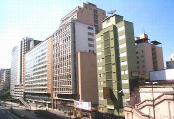

História do Estado de São Paulo
A fundação de São Paulo insere-se no processo de ocupação e exploração das terras americanas pelos portugueses, a partir do século XVI. Inicialmente, os colonizadores fundaram a Vila de Santo André da Borda do Campo (1553), constantemente ameaçada pelos povos indígenas da região.
Nessa época, um grupo de padres da Companhia de Jesus, da qual faziam parte José de Anchieta e Manoel da Nóbrega, escalaram a serra do mar chegando ao planalto de Piratininga onde encontraram "ares frios e temperados como os de Espanha" e "uma terra mui sadia, fresca e de boas águas". Do ponto de vista da segurança, a localização topográfica de São Paulo era perfeita: situava-se numa colina alta e plana, cercada por dois rios, o Tamanduateí e o Anhangabaú.
Em 1681, São Paulo foi considerada cabeça da Capitania de São Paulo e, em 1711, a Vila foi elevada à categoria de Cidade. Apesar disso, até o século XVIII, São Paulo continuava como um quartel-general de onde partiam as "bandeiras", expedições organizadas para apresar índios e procurar minerais preciosos nos sertões distantes. Ainda que não tenha contribuído para o crescimento econômico de São Paulo, a atividade bandeirante foi a responsável pelo devassamento.
A ocupação do espaço urbano registrou essas transformações. O Brás e a Lapa transformaram-se em bairros operários por excelência; ali concentravam-se as indústrias próximas aos trilhos da estrada de ferro inglesa, nas várzeas alagadiças dos rios Tamanduatey e Tietê. A região do Bexiga foi ocupada, sobretudo, pelos imigrantes italianos e a Avenida Paulista e adjacências, áreas arborizadas, elevadas e arejadas, pelos palacetes dos grandes cafeicultores .
Nos anos 50, inicia-se o fenômeno de "desconcentração" do parque industrial de São Paulo que começou a se transferir para outros municípios da Região Metropolitana (ABCD, Osasco, Guarulhos, Santo Amaro) e do interior do Estado (Campinas, São José dos Campos, Sorocaba).
Esse declínio gradual da indústria paulistana insere-se num processo de "terciarização" do Município, acentuado a partir da década de 70. Isso significa que as principais atividades econômicas da cidade estão intrinsecamente ligadas à prestação de serviços e aos centros empresariais de comércio (shopping centers, hipermercados, etc).
10 Cidades do Estado de São Paulo